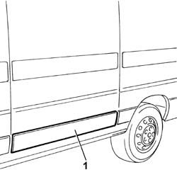

7055B38 SCUFF PANEL SIDE MOULDING (ONE) - R+R
- Path
- Procedures > 70 FITTINGS > 7055 MOULDINGS ON PROTECTIONS > 7055B EXTERIOR PROTECTIONS > 7055B38 SCUFF PANEL SIDE MOULDING (ONE) - R+R
- Kind
- repair procedure (removal / refitting; the operation number is the code)
- Applies to
- all engines; all production periods
- Interactive page
- https://sloeber94.github.io/elrnDB-fDct/en/#/244001538
Applies to: all engines; all production periods
 Removing
Removing
 Refitting
Refitting1. Remove the front moulding from the wheel arch using a suitable tool.

Applies to: all engines; all production periods
Refitting
Removing- Secure the side rubbing strip to the vehicle inserting the fixing pins in the special openings.